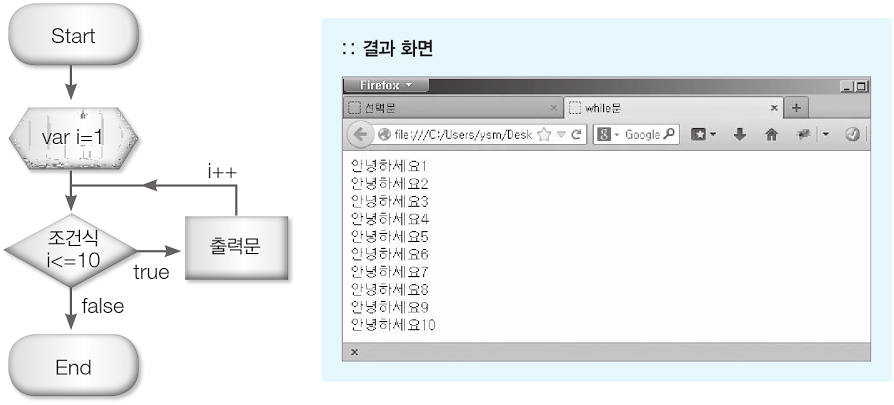
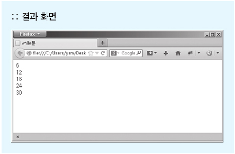
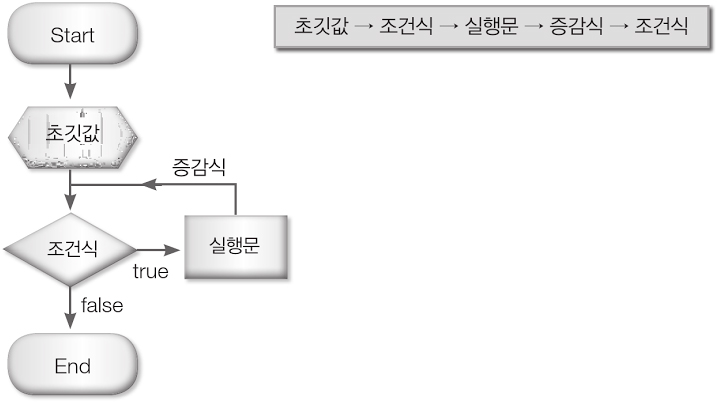

제어문이란?
제어문은 프로그램의 흐름을 제어할 수 있도록 도와주는 실행문을 말합니다.
제어문에는 조건 만족 여부에 따라 실행문을 제어할 수 있는 조건문과, 변수에 일치하는 경우의 값에 따라 실행문을 제어할 수 있는 선택문, 그리고 특정 실행문을 여러번 반복 실행할 수 있도록 하는 반복문이 있습니다.
그중 조건문에는 if문, else(if else)문, else if문이 있습니다.
선택문은 switch문을 사용합니다.
반복문에는 while문과 for문이 있습니다.
조건문은 조건식의 값이 참(true)인지 아니면 거짓(false)인지에 따라 실행문의 제어가 결정됩니다.
예를들어, 질의응답 창을 이용해서 방문자가 좋아하는 숫자를 입력받았을때, 입력된 값을 2로 나누어서 나머지 값이 0이면 "당신이 좋아하는 숫자는 짝수입니다."라고 결과가 나타나도록 하고, 아닐 경우에는 "당신이 좋아하는 숫자는 홀수입니다."라고 출력되게 한다. 이렇게 수를 나눈 나머지 값이 조건식의 만족 여부에 따라 출력되는 실행문을 달리 나타나게 하려면 조건문을 사용해야합니다. 조건문의 종류에는 if, else(if else)문, else if문이 있습니다.
if문은 조건식을 만족할 경우 (true) 에만 실행문을 실행합니다.
var gender = confirm("당신은 남자입니까?");
if(gender){
document.write("<h1>남탕으로 가세요</h1>");
}
if else 조건문은 조건식을 만족(true)할 경우와 만족하지 않았을(false) 경우에 따라 실행되는 실행문이 달라집니다.
즉, 두가지 결과가 나올 수 있습니다.
var gender = confirm("당신은 남자입니까?");
if(gender){
document.write("<h1>남탕으로 가세요</h1>");
} else {
document.write("<h1>여탕으로 가세요</h1>");
}
방문자에게 좋아하는 숫자를 입력받습니다. 기본값은 0입니다.
var num=prompt("당신이 좋아하는 숫자는?","0");
if(num%2==0){ //짝수일 경우에 실행
document.write("당신이 좋아하는 숫자는 짝수입니다.");
} else { //홀수일 경우에 실행
document.write("당신이 좋아하는 숫자는 홀수입니다.");
}
else if문은 두 가지 이상의 조건식과 정해놓은 조건을 만족하지 않았을 때 실행되는 실행문으로 이루어져 있습니다.
다음은 else if 문의 기본형입니다. 가장 위에 있는 조건식 1부터 5까지 차례로 조건 검사를 한 후, 만족(true)하는 값이 나오면 그에 해당하는 실행문을 실행하고 조건문을 종료합니다. 하지만 조건식 중 만족(true)하는 값이 하나도 없을때는, else 문의 중괄호{...}에 있는 실행문을 실행합니다.
기본형
if(조건식1){
실행문1;
} else if(조건식1){
실행문2;
} else if(조건식3){
실행문3;
} else if(조건식4){
실행문4;
} else if(조건식5){
실행문5;
} else{
실행문6;
}
버튼클릭시 if_script 호출
function if_script(){
//txt_value값을 가져온다.
var value = document.getElementById("txt_value").value;
if(value == "1"){
alert("입력값은 1입니다.");
}else if(value == "2"){
alert("입력값은 2입니다.");
}else if(value == "3"){
alert("입력값은 3입니다.");
}else if(value == "4"){
alert("입력값은 4입니다.");
}
else {
alert("뭐?");
}
}
조건문 안에 조건문이 오는 것을 중첩 if 문이라고 합니다. 중첩 if 문의 기본형은 다음과 같습니다.
기본형
if(조건식1){
if(조건식2){
실행문;
}
중첩 if 문은 일반적으로 바깥쪽에 있는 조건문인 조건식 1을 만족해야만 안쪽에 있는 조건문인 조건식 2를 검사합니다. 만일 안쪽 if문의 조건식 2를 만족하지 않는다면, 바깥쪽 조건문인 조건식 1의 중괄호 내에 있는 실행문만 실행하고 종료됩니다.
다음 예제와 같이 방문자에게 아이디와 비밀번호를 입력받을 때, 방문자의 아이디가 일치하지 않으면 비밀번호의 일치 여부를 굳이 검사할 필요가 없게 되는 것입니다.
다음 예제는 중첩 if 문을 사용해 아이디와 비밀번호가 일치했을 때 환영 문구가 출력되도록 한 예제입니다. 비밀번호가 일치하지 않을 경우에는 브라우저가 새로 고침이 실행되도록 했습니다.
var id="abc";
var pw="abc1234";
//방문자로부터 아이디를 입력 받음.
var user_id=prompt("아이디는?","");
//방문자로부터 비밀번호를 입력 받음
var user_pw=prompt("비밀번호는?","");
if(id==user_id) { //아이디가 일치했을 경우
if(pw==user_pw) { //비밀번호가 일치했을 경우
document.write(user_id+"님 반갑습니다!");
} else { //비밀번호가 일치하지 않았을 경우
alert("비밀번호가 일치하지 않습니다.");
location.href=url(); //브라우저 새로 고침이 실행됨.
} //안쪽 if문의 else문 종료
} else { //아이디가 일치하지 않을 경우
alert("아이디가 일치하지 않습니다.");
location.href=url(); //브라우저 새로 고침이 실행됨.
} //바깥 if문의 else문 종료
p.69
예제보기선택문인 switch 문은 변수에 저장된 값과 switch 문에 있는 경우(case)의 값을 검사하여, 변수와 경우의 값에서 일치하는 값이 있을 때 그에 해당하는 실행문을 실행합니다. if 문과 용도는 비슷하지만 if문은 만족하는 데이터가 여러 개일 경우 주로 사용하고, switch 문은 여러 경우의 값 중 일치하는 데이터를 찾아 그에 해당하는 실행문을 실행시킬때 사용합니다.
기본형
var 변수=초기값;
switch(변수){
case 값1: 실행문1;
break;
case 값2: 실행문2;
break;
case 값3: 실행문3;
break;
case 값4: 실행문4;
break;
default: 실행문5;
}
변수에 저장된 값이 switch 문의 경우(case)의 값 중 일치하는 데이터가 있으면, 그에 해당하는 실행문을 실행하고 break 문을 만나 switch 문을 종료합니다. 만일 경우(case)의 값 중에 일치하는 데이터가 없으면, 마지막 default에 있는 실행문을 실행하고 switch 문을 종료합니다.
잠깐!
switch 문과 else if문이 같은거 아니냐구요?
switch문은 if로 표현이 가능하지만 if문은 switch로 표현이 불가능합니다.
if문은 매번 조건문을 파단 해야하기에 switch문보다 느리다고 할 수 있습니다.
if문은 해당 조건을 찾을때까지 조건문을 일일이 수행해야 하기때문에 그만큼 실행라인이 늘어나고,
switch는 해당 항을 찾아가는 것이기 때문에 실행라인이 1개입니다.
다음 예제는 질의응답 창으로 포털 검색 사이트 이름을 입력받고 switch 문을 이용하여 입력한 이름에 해당하는 사이트로 이동하도록 한 예제입니다.
var site=prompt("네이버, 다음, 네이트, 구글 중 즐겨 사용하는 포털 검색 사이트는?","");
var url;
switch (site){
case "네이버":url="www.naver.com"; //"네이버"를 입력했을 경우
break;
case "다음":url="www.daum.net"; //"다음"를 입력했을 경우
break;
case "네이트":url="www.nate.com"; //"네이트"를 입력했을 경우
break;
case "구글":url="www.google.com"; //"구글"을 입력했을 경우
break;
//일치하는 값이 없을 경우
default: alert("보기 중에 없는 사이트입니다.");
}
if(url) location.href="http://"+url; //url에 데이터가 있을 경우에만 실행됨.
p.71
예제보기p.72
예제보기
반복문을 이용하면 실행문을 원하는 횟수만큼 반복하여 실행시킬 수 있습니다.
예를들어, "안녕하세요!" 라는 문구를 100번을 출력하려면 출력문을 100번 작성해야합니다.
하지만 반복문을 사용하면 한 줄의 출력문으로 100번 출력할 수 있습니다.
반복문의 종류로는 for문, while문, do-while문이 있습니다.
for문, while문은 서로 변환이 가능하기 때문에 반복문을 작성할 때 어느 쪽을 선택해도 좋지만,
for문은 반복 횟수가 정해진 경우, 배열과 함께 주로 사용하고,
while문은 무한 루프나 특정 조건에 만족할 때까지 반복해야하는 경우 주로 사용합니다.
while문과 do-while문의 차이점은 조건을 먼저 검사하느냐 나중에 검사하느냐일 뿐 동작 방식은 동일합니다.
while 문은 조건식을 만족할 때까지 실행문을 여러번 반복하여 실행시킬 수 있습니다. 다음은 while 문의 기본형입니다. while 문은 조건식을 만족할 때까지 중괄호{...} 내에 있는 실행문을 반복하여 실행합니다. while 문의 실행 순서는, 1. 조건식을 검사하고, 만족하면 2. 중괄호 내에 있는 실행문 및 증감식을 실행합니다. 그리고 3. 다시 조건식을 검사합니다.
기본형
var 변수=초기값;
while(1,3조건식){
실행문;
증감식;
}
다음 예제는 while 문을 사용해서 '안녕하세요1 ~ 안녕하세요10'까지 1씩 증가되면서 10번 출력되도록 한 예제입니다.
var i=1;
while(i<=10){
document.write("안녕하세요"+i,"
");
i++;
}
while 문의 조건식 i<=10을 검사한 후 만족(true)하면 중괄호{...}에 있는 실행문을 실행하고, 증가 연산자로 변수 i의 값이 1 증가됩니다. 다시 조건식 만족 여부를 검사한 후, 만족(true)하면 다시 중괄호에 실행문을 실행하고, 거짓(false)이면 while 문을 종료합니다.

다음 예제는 while 문을 사용하여 1부터 30까지의 숫자 중 2의 배수이고 6의 배수인 숫자만 출력한 예제입니다.
var i=1;
while(i<=30){ //i가 30보다 작거나 같을 때까지 반복 실행합니다.
//2의 배수이고 6의 배수일 경우에만 출력문을 실행합니다.
if(i%2==0 && i%6==0)document.write(i,"
");
i++;
}
while 문의 조건식을 검사하여 만족(true)할 때 까지 중괄호{...}에 있는 실행문을 반복 실행합니다.
다음 예제는 while문을 사용하여 20부터 10까지 숫자 중 짝수일 경우에는 파란색으로 출력하고, 홀수일 경우에는 빨간색으로 출력되도록 한 예제입니다.
var i=20;
while(i>=10){ //i의 값이 10보다 클 때까지 반복문을 실행합니다.
if(i%2==0){ //i의 값을 2로 나눠서 나머지가 0일 경우
document.write("<font color='blue'>"+i+"</font>","
");
}else{ //i의 값을 2로 나눠서 나머지가 0이 아닐경우
document.write("<font color='red'>"+i+"</font>","
");
}
i--;
}
while 문의 경우에는 조건식의 만족 여부를 먼저 검사한 후, 중괄호에 있는 실행문의 실행 여부를 결정했습니다. 하지만 do while 문은 반드시 한 번은 실행문을 실행하고 조건식을 검사하게 됩니다.
기본형
var 변수=초기값;
do{
실행문;
증감식;
}while(조건식);
다음의 예제를 보면 a=1입니다. 조건식을 보면 1==10입니다. 즉 a가 10과 같을 동안 반복문을 실행하는 것입니다. 그런데 조건식에서는 1== 10이 동일하지 않으므로 반복문을 실행하지 않습니다. 하지만 do문에 있는 실행문을 한번은 실행을 한 후에 조건식을 검사를 하기 때문에 한번은 실행을 하게 됩니다. 즉, a값인 1이 한번은 출력이 된 후 조건식을 검사후에 조건에 만족하지 않으면 do문 안에 명령문을 실행하지 않습니다.
a = 1;
do{
document.write(a);
}
while(a==10);
다음 예제는 중괄호 {...}에 있는 document.write(hello!!); 실행문을 먼저 실행한 후, 조건식 i<3의 만족 여부를 검사합니다. 변수 i에는 10이 저장되어 있으므로 두 수의 비교 연산 결과는 false를 반환하여 더 이상 조건을 만족하지 않으므로 do while 문을 종료시킵니다.
var a = 10; //변수 i에 초기값을 저장합니다.
do{ //먼저 출력문을 실행한 후 조건식을 검사합니다.
document.write("hello!!");
}
while(i<3); //변수 i에 값이 3보다 작으면 while 문을 종료합니다.
for 문은 반복문입니다. 조건식을 만족할 때까지 특정 실행문을 반복하여 실행합니다. 사용 용도는 while 문과 같지만, while 문보다 사용이 편해 사용 빈도가 높은 편입니다.
기본형
for(초기값; 조건식; 증감식){
실행문;
}
다음은 for 문의 실행 순서를 그림으로 표현한 것입니다.
먼저 반복문 제어에 필요한 시작 값을 초기화합니다. 조건이 참일 때 실행 문을 실행합니다. 실행문이 모두 끝나면 증감 식을 실행합니다. 증감된 값을 이용해서 다시 조건 검사를 하고, 조건이 참이면 조건이 거짓일 때까지 반복하게 됩니다.
다음 예제는 for 문으로 '반복1 ~ 반복10'까지 1씩 증가되도록 하여 출력한 예제입니다.
for(var i=1; i<=10; i++){ //중괄호 내에 실행문을 10번 반복합니다.
//변수 i가 1씩 증가되어 10번 출력됩니다.
document.write("반복"+i,"
");
}
1. 변수 i에 초기값 1을 저장합니다.
2. 조건식을 만족할 경우 중괄호에 실행문을 실행합니다.
3. 증가 연산자로 변수 i의 값이 1만큼 증가됩니다.
4. 다시 조건식 만족 여부를 검사한 후, 중괄호에 실행문을 실행할지 아니면 종료할지 결정합니다.
다음 예제는 for 문을 이용하여 1부터 100까지 5의 배수일 경우에는 빨간색 글자, 7의 배수일 경우에는 초록색 글자, 그리고 5의 배수이며 7의 배수일 경우에는 파란색 글자로 출력되게 한 예제 입니다.
for(var i=1; i<=100; i++){ //변수 i가 100이 될 때까지 반복 실행합니다.
if(i%5==0 && i%7!=0){ //5의 배수이고 7의 배수가 아닌 경우
document.write("<font color='red'>"+i+"</font>","<br />");
}else if(i%7==0 && i%5!=0){ //7의 배수이고 5의 배수가 아닌 경우
document.write("<font color='green'>"+i+"</font>","<br />");
}else if(i%7==0 && i%5==0){ //7의 배수이고 5의 배수인 경우
document.write("<font color='blue'>"+i+"</font>","<br />");
}
}
for 문을 사용하여 변수 i의 초기값 1부터 조건식 100보다 작거나 같을 때까지 i의 값을 1씩 증가시키며 중괄호{...}에 있는 실행문을 실행합니다. 즉, 1부터 시작해 100이 될 때까지 중괄호{...}에 있는 실행문이 실행되므로 100번 반복 실행된다는 것을 알 수 있습니다. 조건문에 의해 5의 배수이고 7의 배수가 아닐 경우에는 빨간색 글자로 출력되고, 7의 배수이며 5의 배수가 아닐 경우에는 초록색 글자로 출력됩니다. 그리고 7의 배수이고 5의 배수이면 파란색으로 글자가 출력됩니다.
for 문 안에 for 문을 사용한 것을 중첩 for 문이라고 합니다. 중첩 for 문은, 예를 들어 자바스크립트를 이용해 3행 5열의 표를 만든다고 할 때, 1행씩 행이 만들어질 때마다 5개의 열을 만들어야 할 경우 사용됩니다.
기본형
for(초기값; 조건식; 증감식){
for(초기값; 조건식; 증감식){
실행문;
}
}
다음은 중첩 for문을 사용하여 '1행 1열'부터 '3행 2열'까지 출력한 예제입니다.
바깥쪽 for문은 행만큼 증가되고, 안쪽 for문은 열만큼 증가시키면 됩니다.
for(var i=1; i<=3; i++){ //3행(3번 반복)
for(var k=1; k<=2; k++){//2열(2번 반복)
//3행이 생성되며 한 행씩 2열이 생성됩니다.
document.write(i+"행"+k+"열","</br>");
}
}
다음은 중첩for문을 사용해 구구단이 출력되도록 만든 예제입니다.
바깥for문은 단만큼 2부터 9까지 증가되도록 하였고, 실행문으로 단수가 출력됩니다.
안쪽for문은 곱하는 수 1부터 9까지 증가되도록 하였고,
바깥쪽for문이 한 번 실행될 때마다 안쪽for문의 실행문은 9번씩 실행되므로 총 72번(8x9)의 실행문이 된다는 것을 알 수 있습니다.
for(var i=2; i<=9; i++){ //2에서 9단만큼 반복됩니다.
document.write("<h1>"+i+"단</h1>"); //2단부터 9단까지 단수 출력
for(var k=1; k<=9; k++){ //매 단마다 1부터 9까지 곱합니다.
document.write(i+"x"+k+"="+i*k,"</br>"); //구구단 출력
}
}
다음은 중첩for문을 사용하여 4행 3열 표를 출력한 예제입니다.
바깥쪽for문은 행의 수만큼 1부터 4까지 반복 실행합니다. 실행문에서는 "<tr>" 문자가 변수 t에 결합됩니다.
행에서는 열이 3개씩 생성되어야 합니다.
안쪽for문은 열의 수만큼 1부터 3까지 반복 실행합니다.
바깥쪽for문이 한 번 실행될 때마다 안쪽for문은 3번씩 반복 실행되므로
총 12번(4x3)의 실행문이 실행됩니다.
그 결과, 전체 열은 12개가 생성된다는 것을 알 수 있습니다.
그리고 증가 연산자를 사용해서 num이 1씩 증가 된다는 것을 알 수 있습니다.
최종 변수 t에 문자 결합된 테이블 태그들을 문서에 출력합니다.
var num=1;
var t="<table border='1'>"; //테이블 시작 태그
for(var i=1; i<=4; i++){ //4행
t+="<tr>"; //행 시작 태그
for(var k=1; k<=3; k++){ //3열
t+="<td>"+num+"</td>";
num++;
}
t+="</tr>"; //행 종료 태그
}
t+="</table>"; //테이블 종료 태그
console.log(t);
document.write(t); //테이블 태그를 문서에 출력합니다.
객체의 프로퍼티명을 열거하는 반복문
for문으로 배열이나 컬렉션에 들어있는 내용을 뽑아서 확인하는 경우가 많다 보니 그 일만 전담하는
반복문이 새롭게 생겨났다.
for in 문은 이처럼 컬렉션이나 배열 등의 리스트 형태의 자료구조의 값을 뽑아서 사용하기 편리한
특수한 기능을 가진 반복문이다.
기본형
for(변수 in 객체식){
// 문장
}
in의 왼쪽에는 대입할 곳으로 사용할 수 있는 식을 사용.
for문과 같이 for in 문 안에서 변수 선언 가능.
window.onload = function( ) {
var arr = ['Korea', 'Japan', 'China'];
var str = "";
for (var i in arr) {
str += "<h2>arr["+i+"]:"+ arr[i] +"</h2>";
}
document.body.innerHTML = str;
}
제어문을 활용한 게임
예제보기